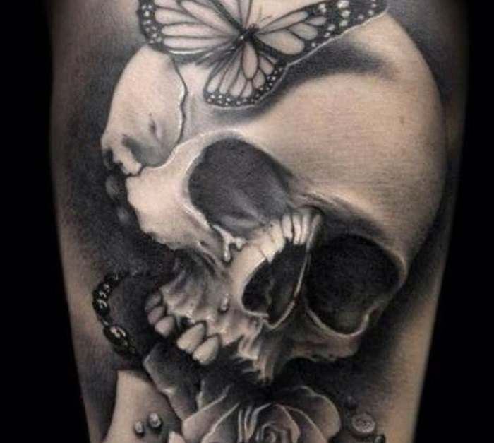
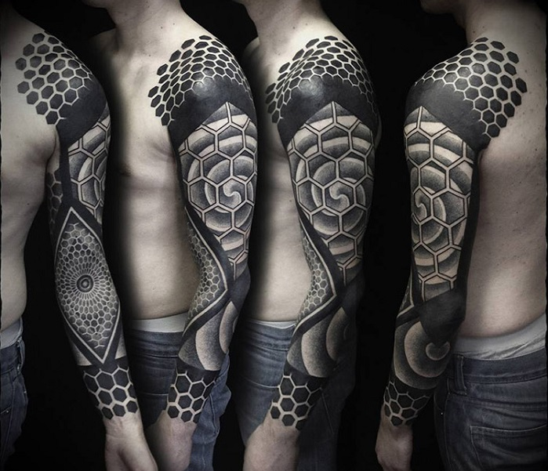

Bienvenidos a
VIRTUAL TATTOO SHOP
La web que le brinda posibilidades de ganar premios, turnos para tattoos o cursos para aprender a tatuar!! No esperes más y registrate.
Virtual Tattoo Shop es una tienda web que ofrece servicios a emprendedores para que muchas personas conozcan su trabajo atavés de la web. Adémas de participar por miles de premios todos los meses.
Nos encargamos de conectar gente con amor a los tatuajes, en esta pagina buscamos la mejor calidad posible para tatuarte y la mejor enseñanza para iniciar los primeros pasos en el mundo del tatuador, tratamos de brindarle lo mayor posible por eso tenemos disponibilidad de 10 tatuadores para que saques un turno y puedas tatuarte con quien vos quieras y el diseño que te imagines.
Tipos de tattoos en los que te podes inspirar
Y a veces no es fácil decidir qué tatuarse, en este artículo podes ver los diferentes tipos de tatuajes y la explicación de sus características. Si estás deseando marcarte la piel con tinta, presta atención a los siguientes datos.
Realista

Estos tatuajes, como su nombre indica, tienen una imagen muy real. Son tatuajes que podrían ser cuadros de pintura, en los que aparecerían personajes retratados. La habilidad del tatuador hace que los tatuajes realistas parezcan casi una fotografía. Seguramente, el tatuador tenga una imagen delante para inspirarse y poder elaborar esta obra maestra.
Acuarela

Este estilo de tatuaje está ganando cada día más adeptos, porque los tatuajes de la acuarela imitan un proceso artístico, empleando las salpicaduras y rayas del color para dar la misma impresión que la pintura que es utilizada en lona o papel. El efecto de la acuarela deja un toque característico en la piel, muy diferente a otros tipos de tatuajes. A menudo se emplean colores brillantes y se tratan temas de la naturaleza.
Grafitti

El estilo graffiti o new school es un estilo de tatuaje que utiliza dibujos animados, influenciados por las técnicas y estilos artísticos del graffiti y el hip-hop. Diseños con colores brillantes y características exageradas. Un tipo de tatuaje con un toque juvenil y transgresor.
Neotradicional

Igual que los anteriores, estos emplean contornos en negrita y un sombreado cuidadoso y preciso, pero a diferencia de los tradicionales, son más detallados, más experimentales con el color y la mezcla y, a menudo, más brillantes, aunque con una simbología limitada y la técnica específica del tatuaje tradicional.
Tradicional u old school

Los tatuajes old school, en castellano llamado de vieja escuela, recibe este nombre porque se emplean diferentes motivos clásicos o tradicionales, como pueden ser: corazones, anclas, espadas, cartas, serpientes, leones barcos, etc.
Tribal

Uno de los estilos de tatuaje basados en una estética más antigua y ancestral. Casi siempre de color negro, a menudo utilizando simetría y diseño geométrico. El tatuador, además, emplea detalles con extrema precisión y delicadeza. Un tatuaje que ha pasado algo de moda, pero que sigue teniendo seguidores.
Góticos
Los tatuajes góticos se relacionan con un estilo de vida o subcultura underground más que a lo que el arte gótico tradicional se refiere. Es un tipo de tatuaje que aporta una sensación de oscuridad o desolación, en el que suelen predominar las calaveras.
Geométricos
Los tatuajes geométricos también están muy de moda. Se caracterizan por diseños complejos que pueden emplear la asimetría y repetición para crear un diseño más grande y llamativo. Sin embargo, también pueden emplearse formas geométricas más pequeñas y discretas. A menudo son en negro, pero puede utilizar otras tonalidades para crear un efecto 3D.